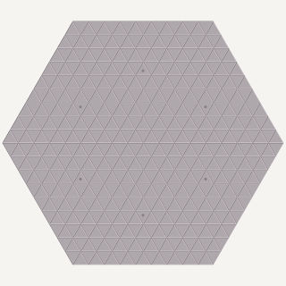
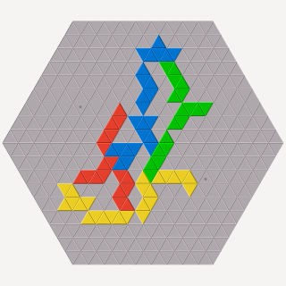

Trigon ist eine weitere Spielvariante. Die Regeln sind ähnlich wie in der Spielvariante Klassisch, aber es werden ein anders geformtes Brett und andere Spielsteine verwendet. Jede Farbe benutzt 22 Spielsteine, die wie die Polyiamonds bis zur Größe sechs geformt sind. (Ein Polyiamond ist eine Figur, die aus einer Anzahl von gleichseitigen Dreiecken besteht, die entlang der Kanten verbunden sind.)
Das Spielbrett besteht ebenfalls aus Dreiecken und hat die Form eines Sechsecks mit jeweils neun Dreiecken pro Kante.

Es gibt sechs Startfelder auf dem Brett, jedes ist vier Reihen von der Mitte einer Kante entfernt. Die Startfelder sind nicht farbig und die Spieler dürfen das Startfeld für den ersten Spielstein einer Farbe frei wählen.

Wie in der Spielvariante Klassisch kann Trigon mit zwei Spielern gespielt werden, indem ein Spieler Blau und Rot und der andere Gelb und Grün spielt.
Trigon kann mit drei Spielern gespielt werden, wobei dieselben Regeln wie für die Variante mit vier Spielern benutzt werden. Die Variante für drei Spieler wird auf einem kleineren Spielbrett mit einer Kantenlänge von acht Dreiecken gespielt. Die sechs Startfelder sind drei Reihen von der Mitte einer Kante entfernt.